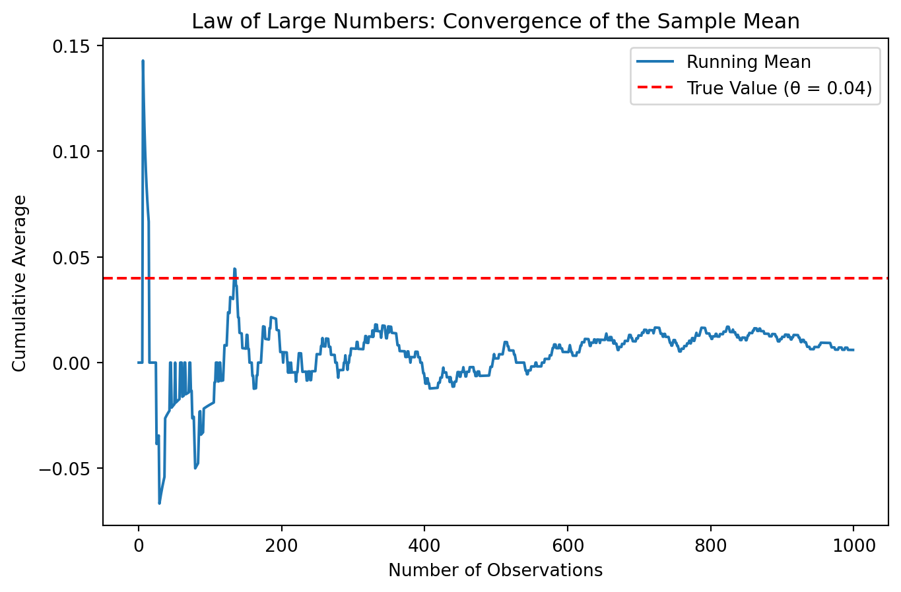
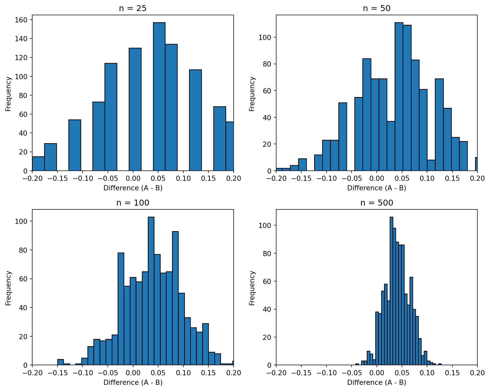

Simulating Key Ideas from Classical Frequentist Statistics
Author
Corrine Chen
Published
April 15, 2026
Introduction
When running a website, even minor choices in wording can often have a significant impact on user behavior. On my website’s homepage, visitors see a button inviting them to subscribe to the newsletter, but I’m not sure which version of the text will yield a higher conversion rate.
To address this, I designed an A/B test to compare two different calls to action:
CTA A: “Subscribe to our newsletter now!”
CTA B: “Enter your email to stay up to date!”
Visitors will be randomly assigned to see one of these versions, and I will compare the sign-up rates between the two groups to determine which CTA performs better.
The A/B Test as a Statistical Problem
Statistically, each visitor has only two possible outcomes: registration (1) or no registration (0), so we can model each person’s behavior as a Bernoulli random variable.
Let:
\(\pi_A\): the probability that a user who sees CTA A will register
\(\pi_B\): the probability that a user who sees CTA B will register
The core question we are interested in is the difference between the two:
\[
\theta = \pi_A - \pi_B
\]
If \(\theta > 0\), it means CTA A is more effective; otherwise, CTA B is better.
In practice, we cannot know the true probabilities, so we use sample proportions to estimate them:
\[
\hat{\theta} = \bar{X}_A - \bar{X}_B
\]
That is, the difference between the sample means (registration rates) of the two groups.
Simulating Data
In real-world applications, we do not know the true values of \(\pi_A\) and \(\pi_B\). Instead, we only observe sample data and must estimate these quantities. However, for the purpose of this exercise, we will set the true values ourselves so that we can better understand how our estimator behaves when the truth is known.
Suppose that \(\pi_A = 0.22\) and \(\pi_B = 0.18\), so the true difference is:
\[
\theta = 0.04
\]
We now simulate 1,000 observations from each group.
import numpy as npnp.random.seed(123)n =1000pi_A =0.22pi_B =0.18A = np.random.binomial(1, pi_A, n)B = np.random.binomial(1, pi_B, n)print("Mean of A:", np.mean(A))print("Mean of B:", np.mean(B))print("Difference:", np.mean(A) - np.mean(B))
Mean of A: 0.207
Mean of B: 0.201
Difference: 0.005999999999999978
This simulation generates 1,000 observations for each group and computes the sample proportions. Because of sampling variability, the observed difference will typically not be exactly equal to the true value of \(\theta = 0.04\), which highlights the role of randomness in statistical estimation.
The Law of Large Numbers
The Law of Large Numbers states that as the sample size increases, the sample mean converges to the true population mean. In our context, this means that our estimator \(\hat{\theta} = \bar{X}_A - \bar{X}_B\) should get closer to the true difference \(\theta\) as we observe more data.
To illustrate this, we compute the difference between each pair of observations and then calculate the cumulative average of these differences.
import numpy as npimport matplotlib.pyplot as plt# element-wise differencesdiffs = A - B# cumulative averagerunning_mean = np.cumsum(diffs) / np.arange(1, n+1)plt.figure(figsize=(8,5))plt.plot(running_mean, label="Running Mean")plt.axhline(y=0.04, color='red', linestyle='--', label="True Value (θ = 0.04)")plt.xlabel("Number of Observations")plt.ylabel("Cumulative Average")plt.title("Law of Large Numbers: Convergence of the Sample Mean")plt.legend()plt.show()

From the plot, we can see that the running average is highly variable when the number of observations is small. However, as more data are included, the estimate stabilizes and converges toward the true value of \(\theta = 0.04\). This demonstrates the Law of Large Numbers in action and explains why larger sample sizes lead to more reliable estimates.
Bootstrap Standard Errors
Since the estimate is expected to converge to the true value over the long run, the next natural question is: How accurate is it? Simply reporting a single point estimate \(\hat{\theta}\) is insufficient, as it does not tell the reader how much uncertainty is associated with this estimate. To quantify this uncertainty, we need to estimate the standard error.
Bootstrapping is a very intuitive resampling method. It does not rely on complex theoretical derivations but instead repeatedly samples with replacement directly from the available sample data, simulating “how the estimator would vary if we performed many similar samplings.” Each bootstrap resample produces a new \(\hat{\theta}^*\), and the standard deviation of these resampled estimates can be taken as the bootstrap standard error.
Below, we perform 1,000 with-replacement resamples from the 1,000 observations in each of Groups A and B, and repeat this process 1,000 times.
Next, we use the theoretical formula to calculate the analytical standard error. For two independent Bernoulli samples, the standard error of the sample mean can be expressed as: \[
SE(\hat\theta) = \sqrt{\frac{\hat\pi_A(1 - \hat\pi_A)}{n} + \frac{\hat\pi_B(1 - \hat\pi_B)}{n}}
\]
Here, \(\hat{\pi}_A\) and \(\hat{\pi}_B\) are the sample proportions.
pi_A_hat = np.mean(A)pi_B_hat = np.mean(B)analytical_se = np.sqrt( pi_A_hat * (1- pi_A_hat) / n + pi_B_hat * (1- pi_B_hat) / n)print("Analytical standard error:", analytical_se)print("Difference between SEs:", abs(boot_se - analytical_se))
Analytical standard error: 0.018020821290940098
Difference between SEs: 9.519496773791394e-05
If the bootstrap standard error and the analytical standard error are close, it indicates that the bootstrap method has successfully captured the uncertainty in the estimate. In this example, the two are typically very close, which suggests that the bootstrap method is not only conceptually appealing but also provides reasonably sound results in practice.
Finally, we use the bootstrap standard error to construct a 95% confidence interval: \[
\hat{\theta} \pm 1.96 \times SE_{bootstrap}
\]
The correct interpretation of this interval is not that “\(\theta\) has a 95% probability of falling within this interval,” because in frequentist statistics, \(\theta\) is a fixed constant, not a random variable. A more precise statement is: if we repeatedly sample using the same method and construct confidence intervals, in the long run, approximately 95% of such intervals will contain the true \(\theta\). In practice, this interval allows us not only to know the estimate of the effect but also to understand the reasonable range of uncertainty.
The Central Limit Theorem
In addition to bootstrapping, another important tool for understanding sampling distributions is the Central Limit Theorem (CLT). The CLT tells us that when the sample size is sufficiently large, even if the original data itself is not normally distributed, many statistics based on the mean will still approximately follow a normal distribution.
In this A/B test, each visitor’s outcome is either 0 or 1, which is clearly not normally distributed data; however, \(\bar{X}_A - \bar{X}_B\), as the difference between the two sample means, will still have a sampling distribution that approximates a bell curve when the sample size is sufficiently large. This is why we can use normal approximation to construct confidence intervals and perform hypothesis tests.
import numpy as npimport matplotlib.pyplot as pltnp.random.seed(123)pi_A =0.22pi_B =0.18sample_sizes = [25, 50, 100, 500]fig, axes = plt.subplots(2, 2, figsize=(10, 8))for i, n inenumerate(sample_sizes): diffs = []for _ inrange(1000): A = np.random.binomial(1, pi_A, n) B = np.random.binomial(1, pi_B, n) diffs.append(np.mean(A) - np.mean(B)) ax = axes[i //2, i %2] ax.hist(diffs, bins=30, edgecolor='black') ax.set_title(f"n = {n}") ax.set_xlabel("Difference (A - B)") ax.set_ylabel("Frequency") ax.set_xlim(-0.2, 0.2)plt.tight_layout()plt.show()

As can be seen in the figure, when the sample size is small (e.g., n = 25), the distribution may be somewhat irregular or even slightly skewed. However, as the sample size increases (n = 100 or n = 500), the distribution becomes smoother and more symmetrical, gradually taking on a bell-shaped form.
This is the essence of the Central Limit Theorem: even if the original data itself is not normally distributed, as long as the sample size is sufficiently large, statistics based on the mean will still follow a near-normal distribution. This is also why we can use normal approximations in A/B testing to perform confidence interval estimation and hypothesis testing.
Hypothesis Testing
Having observed the effects of the Central Limit Theorem, we can use this result to perform a formal hypothesis test. Our goal is to determine whether the difference between the two CTAs is large enough that it cannot be explained by random sampling error.
We define the null hypothesis and the alternative hypothesis as follows:
\[
H_0: \theta = 0
\]
\[
H_1: \theta \neq 0
\]
Here, \(H_0\) states that there is no difference in registration rates between the two CTAs, while \(H_1\) states that there is a difference between them.
To perform the test, we need to standardize the estimator \(\hat{\theta}\) to form a test statistic:
\[
Z = \frac{\hat{\theta} - 0}{SE(\hat{\theta})}
\]
According to the Central Limit Theorem, when the sample size is sufficiently large, the sampling distribution of \(\hat{\theta}\) approximates a normal distribution. Under the null hypothesis (\(\theta = 0\)), the mean of this distribution is 0.
When we subtract the expected value from \(\hat{\theta}\) and divide by the standard error, the resulting statistic \(Z\) approximately follows a standard normal distribution:
\[
Z \sim N(0,1)
\]
This is crucial because once we know the distribution of the statistic under the null hypothesis, we can calculate the p-value to determine whether the observed result is unusual.
It is worth noting that this method is often referred to as a “t-test,” but in this case, it is actually closer to a z-test. The traditional t-test is based on the assumption that the data comes from a normal distribution and the variance is unknown, in which case the test statistic follows a t-distribution. However, here, our data comes from a Bernoulli distribution, not a normal distribution; we rely on the Central Limit Theorem to obtain an approximation of a normal distribution. Therefore, the test here is actually a z-test based on a normal approximation. Since the sample size is very large, the t-distribution and the standard normal distribution are virtually indistinguishable, so this has little practical impact; however, understanding this distinction remains important.
Next, we will use simulated data to calculate the test statistic and p-value:
import numpy as npfrom scipy import stats# point estimatetheta_hat = np.mean(A) - np.mean(B)# standard error (analytical)pi_A_hat = np.mean(A)pi_B_hat = np.mean(B)se = np.sqrt( pi_A_hat * (1- pi_A_hat) / n + pi_B_hat * (1- pi_B_hat) / n)# test statisticz_stat = theta_hat / se# p-value (two-sided)p_value =2* (1- stats.norm.cdf(abs(z_stat)))print("Z-statistic:", z_stat)print("P-value:", p_value)
As can be seen from the results, the p-value is very small, indicating that observing such a difference under the null hypothesis (that there is no difference between the two groups) would be highly unusual. Therefore, we have sufficient evidence to reject the null hypothesis and conclude that there is indeed a difference in the effectiveness of the two CTAs.
However, even if the results are statistically significant, we must consider the practical significance of the effect size. In this example, while the difference may be statistically significant, whether it is practically important still requires further judgment based on the specific application context.
The T-Test as a Regression
In the previous section, we conducted a two-sample hypothesis test to compare the effectiveness of the two CTAs. It turns out that this test is mathematically equivalent to a simple linear regression. Understanding this connection is useful because it shows that the same tools used for regression analysis can also be used for A/B testing, and it naturally extends to more complex experimental designs.
To set up the regression framework, we combine the data from both groups into a single dataset. For each observation, we define:
\(Y_i\): an outcome variable equal to 1 if the visitor signed up and 0 otherwise
\(D_i\): an indicator variable equal to 1 if the visitor saw CTA A and 0 if they saw CTA B
We then fit the following linear regression model:
\[
Y_i = \beta_0 + \beta_1 D_i + \varepsilon_i
\]
The coefficients in this model have a clear interpretation:
\(\beta_0\) is the expected value of \(Y_i\) when \(D_i = 0\), which corresponds to the mean of the B group. Therefore, \(\beta_0\) estimates \(\pi_B\).
\(\beta_0 + \beta_1\) is the expected value of \(Y_i\) when \(D_i = 1\), which corresponds to the mean of the A group. Therefore, it estimates \(\pi_A\).
It follows that \(\beta_1 = \pi_A - \pi_B = \theta\), so the OLS estimate \(\hat{\beta}_1\) is numerically identical to the difference in sample means, \(\hat{\theta}\).
Next, we fit this regression using the simulated data.
import numpy as npimport statsmodels.api as sm# combine dataY = np.concatenate([A, B])D = np.concatenate([np.ones(len(A)), np.zeros(len(B))])# add interceptX = sm.add_constant(D)# fit regressionmodel = sm.OLS(Y, X).fit()
Coefficient (beta_1): 0.07000000000000023
Standard error: 0.02536830901349969
t-statistic: 2.7593482861924254
p-value: 0.005897661552289638
The estimated coefficient \(\hat{\beta}_1\) represents the difference in mean outcomes between the two groups, and should match the value of \(\hat{\theta}\) computed earlier. Similarly, the t-statistic and p-value will be very close to those obtained from the two-sample test, with only minor differences due to how the standard error is calculated (pooled vs. separate variance assumptions).
This equivalence is important because it shows that A/B testing can be viewed as a special case of regression analysis. In more complex settings, we can easily extend this framework by adding control variables, interaction terms, or multiple treatment groups, while still relying on the same underlying statistical principles.
The Problem with Peeking
In practice, it is often tempting to monitor results as data are collected and stop an experiment early if a statistically significant result appears. For example, instead of waiting until all 1,000 observations per group are collected, one might run a hypothesis test after every 100 observations and stop as soon as a p-value falls below 0.05.
Under classical frequentist statistics, this approach is problematic. A single hypothesis test conducted at the \(\alpha = 0.05\) level has a 5% probability of a Type I error — that is, incorrectly rejecting the null hypothesis when it is actually true. However, if we repeatedly test the data as it accumulates, each “peek” creates another opportunity to obtain a false positive. As a result, the overall probability of making at least one false rejection becomes much larger than 5%.
To demonstrate this, we simulate a scenario in which the null hypothesis is true. Specifically, we assume that both CTAs have the same sign-up probability, \(\pi_A = \pi_B = 0.20\), so there is no real difference between the groups.
import numpy as npfrom scipy import statsnp.random.seed(123)# parameters under nullpi_A =0.20pi_B =0.20n_total =1000step =100n_experiments =10000false_positive_count =0for _ inrange(n_experiments):# simulate full data A_full = np.random.binomial(1, pi_A, n_total) B_full = np.random.binomial(1, pi_B, n_total) found_significant =False# peeking at increasing sample sizesfor n inrange(step, n_total +1, step): A = A_full[:n] B = B_full[:n]# estimate theta_hat = np.mean(A) - np.mean(B)# standard error pi_A_hat = np.mean(A) pi_B_hat = np.mean(B) se = np.sqrt( pi_A_hat * (1- pi_A_hat) / n + pi_B_hat * (1- pi_B_hat) / n )# test statistic z_stat = theta_hat / se# p-value p_value =2* (1- stats.norm.cdf(abs(z_stat)))if p_value <0.05: found_significant =Truebreakif found_significant: false_positive_count +=1false_positive_rate = false_positive_count / n_experimentsprint("False positive rate with peeking:", false_positive_rate)
False positive rate with peeking: 0.199
The result of this simulation typically shows that the false positive rate is substantially higher than 5%. In many cases, it can be closer to 15–20% or even higher, depending on how frequently we peek at the data.
This demonstrates that repeated testing inflates the Type I error rate. Each additional test increases the chance of observing a statistically significant result purely by random chance, even when there is no true effect.
In practice, this means that naive peeking can lead to incorrect conclusions and poor decision-making. To maintain valid inference, researchers should either fix the sample size in advance or use statistical methods specifically designed for sequential testing (such as alpha-spending rules or Bayesian approaches). Without such adjustments, the reported p-values and significance levels can be misleading.